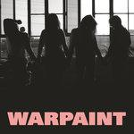
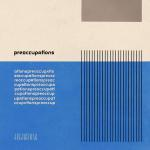

Music Reviews
-
Roosevelt Roosevelt
The Cologne-born DJ's latest is a taut collection of songs that are deliriously easy to dip into again and again, and consistency is its mission statement.
Ellis Victoria reviews... -

Warehouse Super Low
The Atlanta quintet's latest utilizes astute instrumental ideas to convey disquieting unease, even if you can't tell since they’re mostly performed with spirited conviction.
Juan Edgardo Rodríguez reviews... -

Warpaint Heads Up
The first lyric delivered by Emily Kokal and Theresa Wayman is ‘You wouldn’t know it but you’re really in your prime.’ Warpaint are a band that are well and truly in theirs.
Carl Purvis reviews... -

Preoccupations Preoccupations
The four-piece returns with a new name but the same ferocious, agitated songwriting.
Joe Marvilli embraces this album's anxiety... -

Nick Cave & the Bad Seeds Skeleton Tree
Skeleton Tree, as is most of Nick Cave's work, is another attempt for the Australian songwriter to evaluate his faith simply by gauging his own experiences with a pragmatic, albeit profoundly poetic, lens.
Juan Edgardo Rodríguez reviews... -

M.I.A. AIM
Pop has evolved. MySpace is gone. Beyoncé's reign has begun. Where is M.I.A.?
Luiza Lodder reviews... -

AlunaGeorge I Remember
AlunaGeroge understand the power of musical minds coming together, first realised with each other in 2009, and now in inviting some chums for their sophomore album.
Ellis Victoria reviews... -

Angel Olsen My Woman
Angel Olsen takes on all the aspects of being a woman in a relationship, wisely looking not just at love or heartbreak, but change and acceptance.
Joe Marvilli follows Olsen down this wild road... -
Isaiah Rashad The Sun's Tirade
The Tennessee rapper's second album is his shot at album greatness for T.D.E, even if it should not be graded up to the thirty foot high jump bar set by his label mates.
Michael G. Barilleaux reviews... -

Ice Choir Designs in Rhythm
Synthpop outfit Ice Choir’s second album, Designs in Rhythm, is an observant and adept display of all the eccentricities and concepts of 80s pop.
Ellis Victoria reviews...